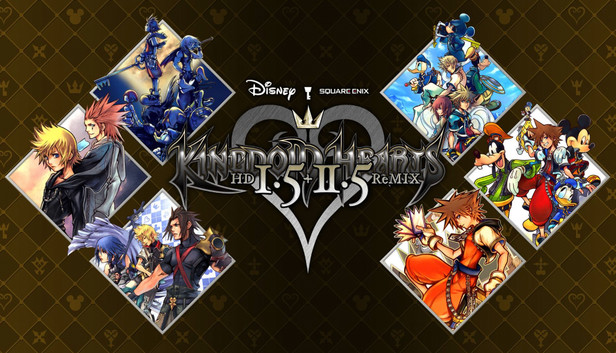
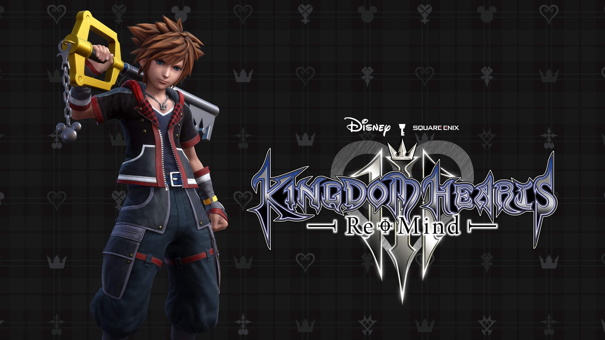

Kingdom Hearts
Introduction
La licence Kingdom Hearts est née en 2002 d'une collaboration inattendue entre Square Enix (alors Squaresoft) et Disney, marquant l'histoire du jeu de rôle (Action-RPG). Conçue et dirigée par Tetsuya Nomura (célèbre pour son travail sur Final Fantasy), la série trouve son origine dans l'idée audacieuse de fusionner les mondes lumineux de Disney avec les personnages et la narration souvent plus sombres de Square. Le premier opus est sorti sur PlayStation 2 et a immédiatement conquis le public, notamment grâce à la musique iconique de Yoko Shimomura. Cette fusion a établi une identité visuelle et narrative unique, posant les bases d'une saga qui allait rapidement dépasser les attentes initiales.


L'histoire se concentre sur Sora, un adolescent des Îles du Destin, qui est choisi par une arme mystique, la Keyblade, pour défendre l'équilibre des mondes. Accompagné de Donald et Dingo (émissaires du Roi Mickey), il voyage à travers un multivers composé des mondes Disney (de Blanche-Neige à La Reine des Neiges) pour sceller les serrures de ces mondes et empêcher les Sans-cœur (créatures nées des Ténèbres) de les engloutir. Au fil des jeux, l'intrigue se complexifie, introduisant des concepts de Simili (êtres sans corps ni cœur) et de Nescient, tout en s'articulant autour du grand conflit éternel entre la Lumière et les Ténèbres, souvent orchestré par l'antagoniste principal, Maître Xehanort.
Jeux Disponible
Kingdom Hearts 1.5 + 2.5 Remix
Cette compilation regroupe plusieurs titres de la série Kingdom Hearts, offrant aux joueurs une expérience complète et enrichie. Elle inclut les jeux suivants :
- Kingdom Hearts Final Mix : Une version améliorée du jeu original avec du contenu supplémentaire.
- Kingdom Hearts Re:Chain of Memories : Un remake du jeu Game
- Kingdom Hearts 358/2 Days (cinématiques uniquement) : Raconte l'histoire de Roxas et l'Organisation XIII.
- Kingdom Hearts II Final Mix : Une version améliorée de Kingdom Hearts II avec du contenu supplémentaire.
- Kingdom Hearts Birth by Sleep Final Mix : Un remake du jeu PSP avec du contenu supplémentaire.
Kingdom Hearts 2.8 Final Chapter Prologue

Cette compilation sert de pont entre Kingdom Hearts II et Kingdom Hearts III, offrant aux joueurs un aperçu des événements à venir. Elle comprend :
- Kingdom Hearts Dream Drop Distance HD : Un remake du jeu Nintendo 3DS avec des graphismes améliorés.
- Kingdom Hearts 0.2 Birth by Sleep -A fragmentary passage- : Une courte aventure centrée sur Aqua, servant de prologue à Kingdom Hearts III.
- Kingdom Hearts χ Back Cover (cinématiques uniquement) : Raconte l'histoire de l'ère de la Keyblade avant les événements principaux de la série.
Kingdom Hearts III Remind
Le troisième volet principal de la série, Kingdom Hearts III, conclut l'arc narratif initié dans les premiers jeux. Il suit Sora, Donald et Dingo alors qu'ils affrontent Maître Xehanort et ses plans pour plonger tous les mondes dans les Ténèbres. Le jeu introduit de nouveaux mondes basés sur des films Disney récents, tels que La Reine des Neiges et Toy Story, et propose des graphismes époustouflants grâce au moteur Unreal Engine 4. Les mécaniques de jeu ont été améliorées, offrant des combats dynamiques et des capacités spéciales pour chaque personnage jouable.